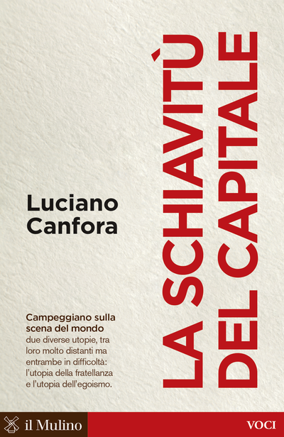

26:24 · 3 OPERE
Luciano Canfora e la schiavitù del capitale.
Il filo del discorso
Dr Divago prende spunto da presentazioni della Schiavitù del capitale di Luciano Canfora e dichiara di non aver letto il volume. La prima obiezione riguarda una frase sulle guerre combattute negli Stati Uniti: il richiamo al conflitto del 1812 introduce il rapporto fra autorevolezza di chi parla e controllo dei fatti. Il centro dell’intervento è però una distinzione proposta dal relatore fra economia, intesa come scambio di beni e servizi, e finanza, descritta attraverso credito e circolazione del denaro.
Leggi la sintesi completaRiduci la sintesi
Gli aneddoti su Socrate al mercato e su Talete servono a collegare i bisogni, la sapienza e la ricchezza. L’analogia con la ricerca degli elementi fondamentali della materia conduce alla transazione come unità del ragionamento economico. Il relatore critica quindi la riduzione del capitale alla ricerca del profitto e sostiene che l’accumulazione possa mirare al controllo dei fini collettivi: è la sua tesi politica, non una conseguenza necessaria degli esempi. La seconda parte affronta la convertibilità del dollaro in oro, la moneta elettronica e il ruolo delle banche centrali, con precisazioni nelle note sulle differenze fra moneta centrale e bancaria. La conclusione torna all’esigenza di un dibattito culturale sugli strumenti contemporanei dell’economia. Il commento alle presentazioni di Canfora resta distinto da una ricostruzione integrale delle argomentazioni del libro e da una trattazione tecnica condivisa da tutti gli economisti.
I libri nel discorso

La schiavitù del capitale
Note sul riferimento
Copertina: il Mulino · Voci, 2017
Immagine autentica dell’opera, controllata visivamente; l’edizione di riferimento non è attribuita al filmato.
La schiavitù del capitale, Luciano Canfora e il Mulino sono annunciati. Il relatore dichiara più avanti di non aver letto il volume.

Politica
Identificazione probabile
Note sul riferimento
Copertina: Bompiani · Testi a fronte, 2016 · a cura di Federico Ferri
Immagine autentica dell’opera, controllata visivamente; l’edizione di riferimento non è attribuita al filmato.
L’aneddoto di Talete e dei frantoi suggerisce Politica I,11; titolo non pronunciato.

Teeteto, o sulla scienza
Identificazione probabile
Note sul riferimento
Copertina: Feltrinelli · 1994 · traduzione di Luca Antonelli, introduzione di Salvatore Natoli, saggio di Davide Spanio
Immagine autentica dell’opera, controllata visivamente; l’edizione di riferimento non è attribuita al filmato.
Talete nel pozzo e la servetta tracia suggeriscono Teeteto 174a, senza titolo annunciato.